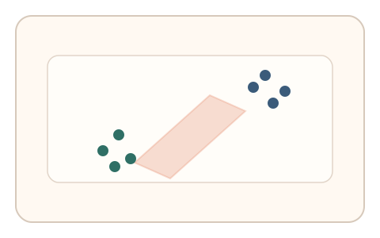
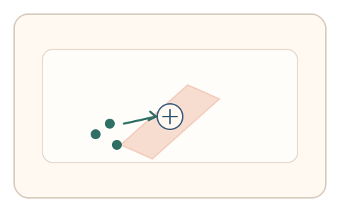
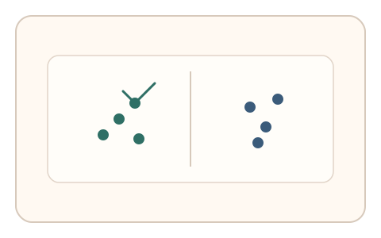

#P2
Foundational Principles
已扩展
人机差异空间
在“人类稳定优势—机器脆弱环节”的差异带上构建任务与信号，形成结构性安全底座。
概念原文
设计应锚定在人类相对稳定的能力优势与机器相对脆弱的环节之间的差异带，作为安全逻辑的核心立足点。
将“差异带”从表层识别难度升级为结构性安全核心。
研究背景
验证码的有效性取决于人类与机器能力差异。相比单点识别难度，更重要的是寻找稳定且难以被机器完全复制的差异空间，并通过多信号组合构建可持续的区分度。
核心机制
- 识别人类稳定优势维度（感知整合、微动作噪声、策略调整）。
- 设计能放大差异的交互任务，避免直接可计算答案。
- 采集多信号特征，强调一致性与微调模式。
- 持续更新任务参数，防止差异带被模型快速学习。
用户流程
- 步骤 1：用户进入差异带任务场景。
- 步骤 2：用户完成交互，系统采集多维信号。
- 步骤 3：系统对比人类分布并给出判定。
判定信号
微时序与轨迹噪声结构
人类动作存在稳定的非线性微差异。
策略选择与纠偏模式
真实用户会表现出试探、回撤与自我修正。
判定逻辑
以多信号一致性为判定核心，要求落在人类差异带分布；过度最优或过度平滑的行为判异常。
对抗面
- 模型学习任务并拟合人类分布
- 批量采集真实用户行为进行重放
防御与缓解
- 动态生成任务参数并随机化刺激
- 多模态信号耦合提升仿真成本
- 周期性更新差异带任务设计
可达性与风险
在差异带内提供可达性替代方式，确保特殊用户仍能提供可判定的信号。
- 机器能力提升导致差异带收窄
- 过度依赖某一群体特征引发偏差
可视化状态

状态 1：差异带定位
在人类优势与机器弱点之间定位差异空间。

状态 2：任务锚定
任务锚定在差异带区域并采集信号。

状态 3：分布判定
以人类分布为参照形成判定边界。
参考资料
CAPTCHA
说明验证码依赖人机能力差异。
Behavioral biometrics
说明行为特征在区分中的价值。